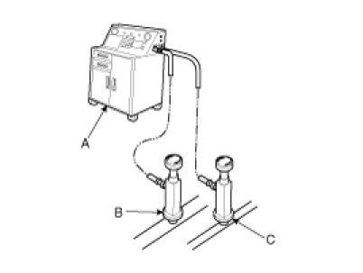

Refrigerant: Service and Repair
System Evacuation
Use only service equipment that is U.L-listed and is certified to meet the requirements of SAE J2210 to remove HFC-134a(R-134a) from the air conditioning system.
CAUTION:
- Air conditioning refrigerant or lubricant vapor can irritate your eyes, nose, or throat.
- Be careful when connecting service equipment.
- Do not breathe refrigerant or vapor.
If accidental system discharge occurs, ventilate work area before resume of service.
Additional health and safety information may be obtained from the refrigerant and lubricant manufacturers.
1. When an A/C System has been opened to the atmosphere, such as during installation or repair, it must be evacuated using an R-134a refrigerant Recovery/Recycling/Charging System. (If the system has been open for several days, the receiver/dryer should be replaced, and the system should be evacuated for several hours.)
2. Connect an R-134a refrigerant Recovery/Recycling/Charging System (A) to the high-pressure service port (B) and the low-pressure service port (C) as shown, following the equipment manufacturer's instructions.

3. If the low-pressure does not reach more than 93.3 kPa (700 mmHg, 27.6 in.Hg) in 10 minutes, there is probably a leak in the system. Partially charge the system, and check for leaks (see Leak Test.).
4. Remove the low pressure valve from the low-pressure service port.
System Charging
Use only service equipment that is U.L-listed and is certified to meet the requirements of SAE J2210 to remove HFC-134a(R-134a) from the air conditioning system.
CAUTION:
- Air conditioning refrigerant or lubricant vapor can irritate your eyes, nose, or throat.
- Be careful when connecting service equipment.
- Do not breathe refrigerant or vapor.
If accidental system discharge occurs, ventilate work area before resume of service.
Additional health and safety information may be obtained from the refrigerant and lubricant manufacturers.
1. Connect an R-134a refrigerant
Recovery/Recycling/Charging System (A) to the high-pressure service port (B) as shown, following the equipment manufacturer's instructions.
2. Add the same amount of new refrigerant oil to system that was removed during recovery. Use only specified refrigerant oil. Charge the system with 17.6 ± 0.88 oz. (500 ± 25g) of R-134a refrigerant. Do not overcharge the system the compressor will be damaged.